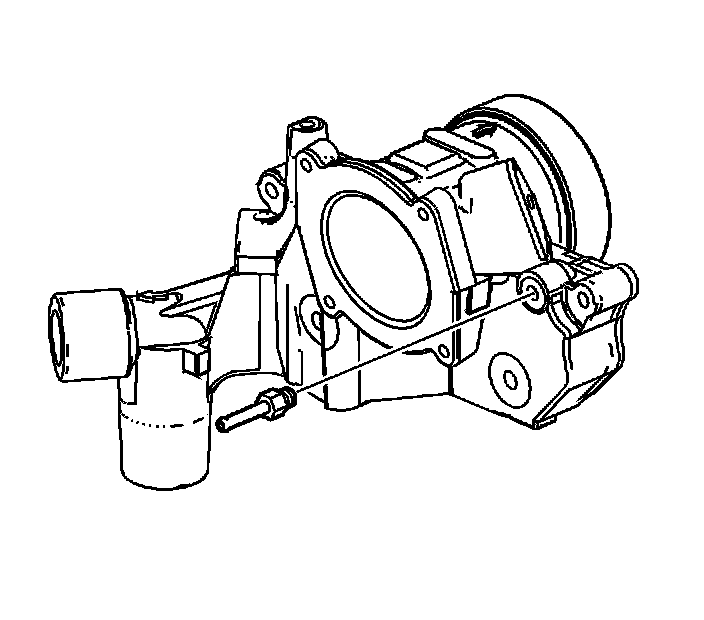
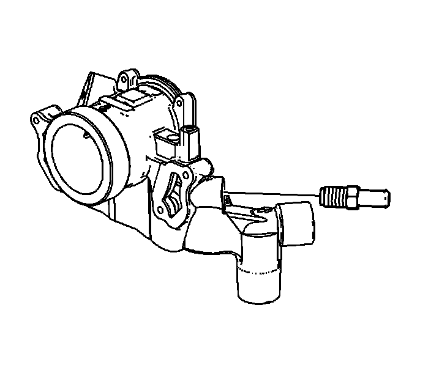
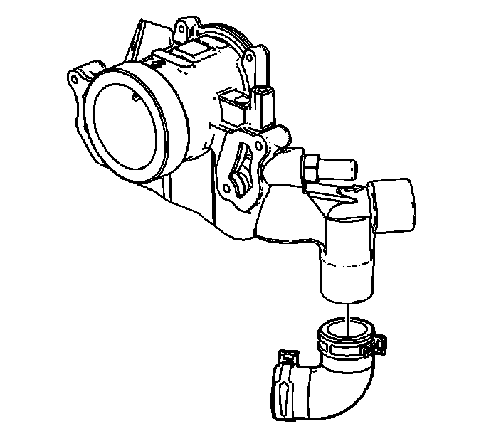
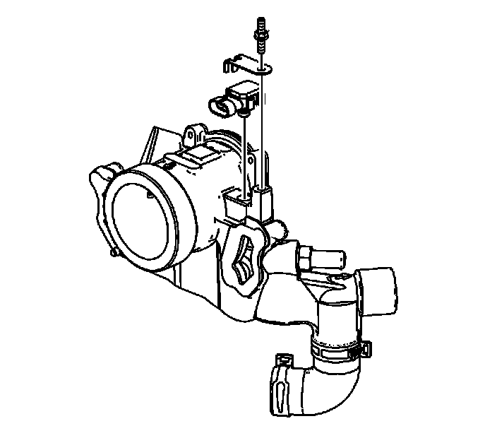
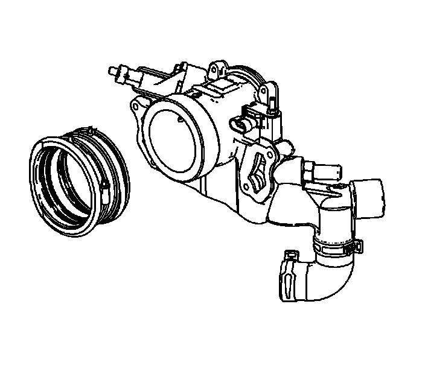

94. Water Outlet Housing Assemble
Water Outlet Housing Assemble

1. Install NEW O-rings on the EVAP purge valve and MAP sensor.
Notice: Refer to Fastener Notice (Fastener Notice) .
2. Install the coolant fitting.
Tighten the engine coolant air bleed fitting to 10 N.m (89 lb in).

3. Install the heater hose fitting.
Tighten the heater hose fitting to 45 N.m (33 lb ft).

4. Install the NEW bypass hose.
5. Position the bypass hose clamp.

6. Install the MAP sensor.
7. Install the MAP sensor bolt.
Tighten the MAP sensor bolt to 10 N.m (89 lb in).

8. Install the EVAP purge valve.
9. Install the EVAP purge valve bolt.
Tighten the EVAP purge valve bolt to 10 N.m (89 lb in).

10. Install the intake manifold plenum duct.
11. Tighten the intake manifold plenum duct clamp.
Tighten the intake manifold plenum duct clamp to 2.25 N.m (20 lb in).